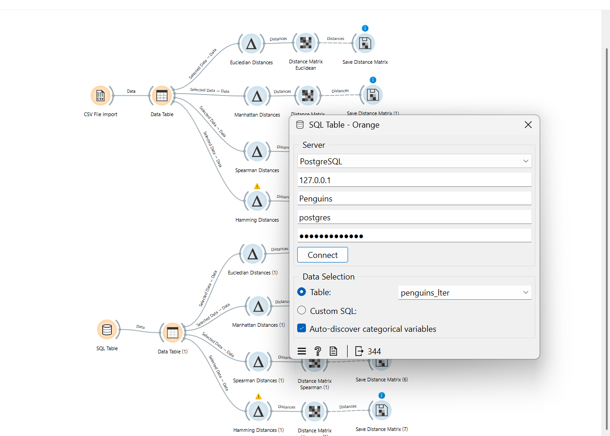
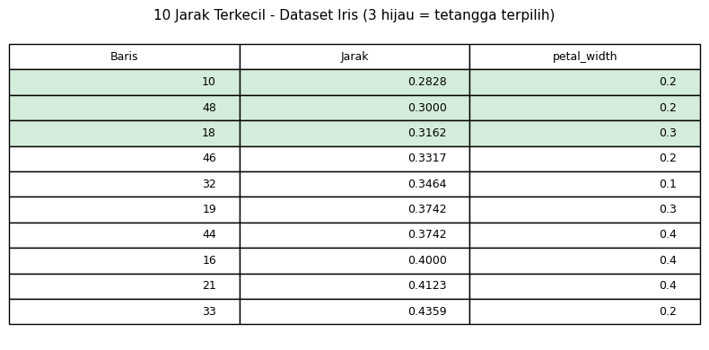
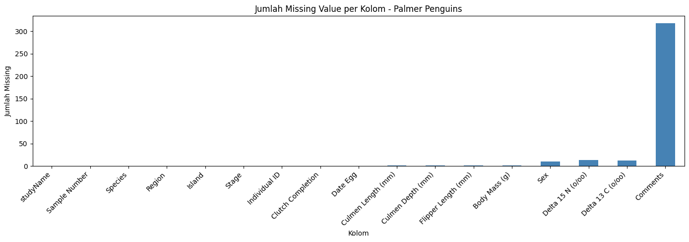

DATA PREPARATION — PERTEMUAN 3#
Studi Kasus: Iris + Data Campuran (Mixed-Type)#
Identitas Mahasiswa
Nama |
Shofiatul Mahmudah |
NIM |
240411100023 |
Mata Kuliah |
Penambangan Data |
Pertemuan |
3 — Data Preparation |
Dokumen ini melanjutkan materi Data Preparation dalam kerangka CRISP-DM yang mencakup: identifikasi missing value, statistik deskriptif, encoding, scaling, pengukuran jarak, dan penanganan data campuran (mixed-type).
✅ Tugas Pertemuan 3#
Tugas yang Harus Diselesaikan
Berikut tiga tugas utama pada Pertemuan 3 beserta status penyelesaiannya:
No |
Tugas |
Status |
Keterangan |
|---|---|---|---|
1 |
Mengukur Jarak — ditempatkan di bawah bagian Data Understanding |
✅ Selesai |
Euclidean, Manhattan, Spearman, Hamming pada data Iris (CSV & SQL) — lihat Section 3.13–3.14 |
2 |
Buat/Cari Data Campuran — mengandung tipe ordinal, numerik, kategorikal, dan biner |
✅ Selesai |
Dataset Palmer Penguins ( |
3 |
Lakukan Pengukuran Jarak pada Data Campuran tersebut |
✅ Selesai |
4 metrik jarak diterapkan di Orange pada data Palmer Penguins — lihat Section 3.15.5 |
4 |
KNN Imputation — Data Numerik (Iris) |
✅ Selesai |
KNN k=3 pada Iris baris 5, petal_width — lihat Section 3.15.8 |
5 |
KNN Imputation — Data Campuran (Palmer Penguins) |
✅ Selesai |
KNN mixed-type pada Palmer Penguins, body_mass_g — lihat Section 3.15.9 |
File Orange Workflow:
Penguins.owsFile SQL Database:
Penguins.sql
3.1 Konsep CRISP-DM#
CRISP-DM (Cross-Industry Standard Process for Data Mining) adalah metodologi standar dalam proyek data mining yang terdiri dari 6 fase berurutan:
No |
Fase |
Keterangan |
|---|---|---|
1 |
Business Understanding |
Memahami tujuan bisnis dan kebutuhan analisis |
2 |
Data Understanding |
Eksplorasi awal data, statistik deskriptif |
3 |
Data Preparation |
Pembersihan, transformasi, seleksi fitur |
4 |
Modeling |
Membangun model machine learning |
5 |
Evaluation |
Mengevaluasi performa model |
6 |
Deployment |
Implementasi model ke sistem nyata |
Pertemuan ini berfokus pada fase Data Preparation — fase paling kritis yang memakan 60–70% waktu proyek data mining.
3.2 Persiapan Lingkungan#
Sebelum memulai analisis, kita impor library yang dibutuhkan. Setiap library memiliki peran khusus dalam proses data preparation.
%matplotlib inline
import pandas as pd # manipulasi dan analisis data tabular
import numpy as np # komputasi numerik dan array
import matplotlib.pyplot as plt # visualisasi data
from sklearn.preprocessing import StandardScaler, LabelEncoder
from sklearn.metrics import pairwise_distances
Library |
Fungsi Utama |
|---|---|
|
Load CSV, manipulasi DataFrame, groupby, describe |
|
Operasi array, kalkulasi jarak manual |
|
Plot histogram, visualisasi distribusi |
|
Normalisasi fitur (mean=0, std=1) sebelum hitung jarak |
|
Konversi label kategorikal ke numerik |
|
Hitung distance matrix antar semua pasang data |
3.3 Memuat Dataset Awal#
Dataset dimuat kembali untuk memastikan seluruh proses preparation dilakukan pada data mentah yang konsisten.
df = pd.read_csv("IRIS.csv")
df.head()
Output df.head() — 5 baris pertama dataset Iris:
sepal_length |
sepal_width |
petal_length |
petal_width |
species |
|
|---|---|---|---|---|---|
0 |
5.1 |
3.5 |
1.4 |
0.2 |
Iris-setosa |
1 |
4.9 |
3.0 |
1.4 |
0.2 |
Iris-setosa |
2 |
4.7 |
3.2 |
1.3 |
0.2 |
Iris-setosa |
3 |
4.6 |
3.1 |
1.5 |
0.2 |
Iris-setosa |
4 |
5.0 |
3.6 |
1.4 |
0.2 |
Iris-setosa |
Dataset ini berisi 150 baris dan 5 kolom, terdiri dari 4 fitur numerik dan 1 kolom target kategorikal.
3.4 Penjelasan: Fitur vs Kelas (Target)#
Memahami perbedaan fitur dan kelas adalah dasar sebelum melakukan pemodelan supervised learning.
Fitur (features / attributes) = kolom input yang menjadi karakteristik bunga, digunakan sebagai variabel independen (X).
Kelas (class / label / target) = kolom output yang ingin diprediksi, merupakan variabel dependen (y).
Tabel Identifikasi Kolom Dataset Iris:
Kolom |
Tipe Data |
Peran |
Keterangan |
|---|---|---|---|
|
Numerik (float) |
Fitur |
Panjang kelopak luar / sepal (cm) |
|
Numerik (float) |
Fitur |
Lebar kelopak luar / sepal (cm) |
|
Numerik (float) |
Fitur |
Panjang mahkota bunga / petal (cm) |
|
Numerik (float) |
Fitur |
Lebar mahkota bunga / petal (cm) |
|
Kategorikal (string) |
Kelas (Target) |
Jenis bunga: setosa, versicolor, virginica |
✅ Kesimpulan: sepal_length, sepal_width, petal_length, petal_width → fitur.
Sedangkan Iris-setosa, Iris-versicolor, Iris-virginica → kelas/label.
Jika membuat kolom
species_encoded, itu hanya versi numerik dari kelas — bukan fitur baru.
3.5 Identifikasi Missing Value#
Identifikasi missing value adalah langkah pertama dan wajib dalam data preparation. Data yang memiliki nilai kosong dapat menyebabkan error pada algoritma atau hasil analisis yang bias.
3.5.1 Jumlah Missing per Kolom#
missing_count = df.isnull().sum()
missing_count
3.5.2 Persentase Missing per Kolom#
missing_percent = (df.isnull().mean() * 100).round(2)
pd.DataFrame({'missing_count': missing_count, 'missing_%': missing_percent})
Hasil Pengecekan Missing Value Dataset Iris:
Kolom |
Missing Count |
Missing % |
Status |
|---|---|---|---|
|
0 |
0.00% |
✅ Lengkap |
|
0 |
0.00% |
✅ Lengkap |
|
0 |
0.00% |
✅ Lengkap |
|
0 |
0.00% |
✅ Lengkap |
|
0 |
0.00% |
✅ Lengkap |
Dataset Iris tidak memiliki missing value, sehingga tidak diperlukan proses imputasi (pengisian nilai kosong).
3.5.3 Menampilkan Baris yang Memiliki Missing (jika ada)#
rows_with_missing = df[df.isnull().any(axis=1)]
rows_with_missing.head()
3.5.4 Statistik Deskriptif per Fitur (Overall)#
Statistik deskriptif memberikan gambaran umum distribusi data setiap fitur — ukuran pusat (mean, median) dan ukuran sebaran (std, min, max).
numeric_cols = ['sepal_length', 'sepal_width', 'petal_length', 'petal_width']
df[numeric_cols].describe().T
Ringkasan Statistik Deskriptif (150 data):
Fitur |
count |
mean |
std |
min |
25% |
50% |
75% |
max |
|---|---|---|---|---|---|---|---|---|
sepal_length |
150 |
5.843 |
0.828 |
4.3 |
5.1 |
5.80 |
6.4 |
7.9 |
sepal_width |
150 |
3.054 |
0.434 |
2.0 |
2.8 |
3.00 |
3.3 |
4.4 |
petal_length |
150 |
3.759 |
1.765 |
1.0 |
1.6 |
4.35 |
5.1 |
6.9 |
petal_width |
150 |
1.199 |
0.763 |
0.1 |
0.3 |
1.30 |
1.8 |
2.5 |
3.5.5 Frekuensi Tiap Kelas#
df['species'].value_counts()
Distribusi Kelas (Species):
Kelas |
Jumlah |
Persentase |
|---|---|---|
Iris-setosa |
50 |
33.3% |
Iris-versicolor |
50 |
33.3% |
Iris-virginica |
50 |
33.3% |
Dataset Iris seimbang (balanced) — setiap kelas memiliki jumlah data yang sama (50 sampel), sehingga tidak diperlukan teknik resampling.
3.5.6 Statistik Deskriptif per Kelas (Ringkas)#
df.groupby('species')[numeric_cols].agg(['mean','std','min','max']).round(3)
Statistik Mean per Kelas:
Kelas |
sepal_length |
sepal_width |
petal_length |
petal_width |
|---|---|---|---|---|
Iris-setosa |
5.006 |
3.418 |
1.464 |
0.244 |
Iris-versicolor |
5.936 |
2.770 |
4.260 |
1.326 |
Iris-virginica |
6.588 |
2.974 |
5.552 |
2.026 |
Tampilkan pairplot untuk melihat distribusi fitur per kelas secara visual:
import matplotlib.pyplot as plt
import pandas as pd
pd.plotting.scatter_matrix(df[numeric_cols], figsize=(10, 8), c=df['species'].astype('category').cat.codes)
plt.suptitle('Pairplot Fitur Iris per Kelas')
plt.tight_layout()
plt.show()
Catatan: Jalankan kode di atas untuk menghasilkan pairplot fitur Iris per kelas. Scatter matrix akan menunjukkan distribusi dan korelasi antar fitur, dengan warna berbeda per species.
💡 Catatan: Setelah memahami statistik data (Data Understanding), langkah berikutnya adalah pengukuran jarak antar sampel. Dalam urutan CRISP-DM, pengukuran jarak dilakukan tepat setelah eksplorasi data — lihat Section 3.13 untuk detail metrik dan implementasi.
3.11 Cara Collecting Data#
Data collecting adalah proses mengumpulkan data sebelum preparation dimulai. Kualitas data yang dikumpulkan sangat menentukan kualitas model yang dihasilkan — prinsip “garbage in, garbage out”.
Sumber Data yang Umum Digunakan:
Sumber |
Contoh Format |
Keterangan |
|---|---|---|
File lokal |
CSV, Excel, JSON |
Cara paling umum, mudah diimpor ke Python/Orange |
Database |
MySQL, PostgreSQL |
Data terstruktur dari sistem informasi |
API/Web |
REST API, JSON response |
Data real-time dari layanan online |
Sensor/IoT |
Time-series, stream |
Data dari perangkat fisik |
Web scraping |
HTML → CSV |
Pengambilan data web (jika diizinkan) |
Tahapan Umum Collecting:
Tentukan kebutuhan — fitur apa, kelas apa, berapa banyak data
Ambil data — download file / query DB / panggil API
Simpan versi raw (mentah) sebelum dimodifikasi apapun
Buat data dictionary — dokumentasi arti kolom, satuan, tipe data
Baru masuk ke fase data preparation
Contoh Data Dictionary untuk Dataset Iris:
Kolom |
Tipe |
Satuan |
Nilai Unik |
Keterangan |
|---|---|---|---|---|
|
float |
cm |
kontinu |
Panjang sepal bunga |
|
float |
cm |
kontinu |
Lebar sepal bunga |
|
float |
cm |
kontinu |
Panjang petal bunga |
|
float |
cm |
kontinu |
Lebar petal bunga |
|
string |
— |
3 |
Kelas/label jenis bunga Iris |
3.12 Cara Menarik Data dari MySQL/PostgreSQL ke Orange#
Orange dapat mengambil data langsung dari database relasional melalui widget SQL Table. Ini berguna ketika data disimpan di server database dan tidak tersedia sebagai file CSV.
3.12.1 Langkah Umum (Workflow Orange)#
Buka Orange Data Mining
Dari panel widget, tambahkan: SQL Table
Pilih tipe database: MySQL atau PostgreSQL
Isi parameter koneksi
Pilih tabel atau tulis query SQL kustom
Sambungkan output ke widget: Data Table → Select Columns → Impute → Normalize
3.12.2 Contoh Parameter Koneksi#
Parameter |
MySQL |
PostgreSQL |
|---|---|---|
Host |
|
|
Port |
|
|
Database |
|
|
User |
|
|
Password |
|
|
3.12.3 Contoh Query SQL#
SELECT sepal_length, sepal_width, petal_length, petal_width, species
FROM iris
WHERE sepal_length IS NOT NULL;
Kalau widget SQL Table belum tersedia: buka Options → Add-ons, cari dan install add-on Orange-SQL atau yang mendukung koneksi database.
3.6 Encoding Label#
Karena algoritma machine learning memerlukan data numerik, maka label species bertipe string perlu dikonversi menjadi bentuk numerik menggunakan LabelEncoder.
from sklearn.preprocessing import LabelEncoder
le = LabelEncoder()
df['species_encoded'] = le.fit_transform(df['species'])
df.head()
Mapping Encoding:
Label Asli |
Encoded |
Keterangan |
|---|---|---|
|
0 |
Kelas pertama secara alfabet |
|
1 |
Kelas kedua |
|
2 |
Kelas ketiga |
Output df.head() setelah Encoding:
sepal_length |
sepal_width |
petal_length |
petal_width |
species |
species_encoded |
|
|---|---|---|---|---|---|---|
0 |
5.1 |
3.5 |
1.4 |
0.2 |
Iris-setosa |
0 |
1 |
4.9 |
3.0 |
1.4 |
0.2 |
Iris-setosa |
0 |
2 |
4.7 |
3.2 |
1.3 |
0.2 |
Iris-setosa |
0 |
3 |
4.6 |
3.1 |
1.5 |
0.2 |
Iris-setosa |
0 |
4 |
5.0 |
3.6 |
1.4 |
0.2 |
Iris-setosa |
0 |
Kolom species_encoded kini merepresentasikan label dalam bentuk angka.
3.7 Pemisahan Fitur dan Target#
Dataset dipisahkan menjadi dua bagian agar model dapat dilatih secara supervised:
X → matriks fitur input (4 kolom numerik)
y → vektor target/label (1 kolom encoded)
X = df[['sepal_length', 'sepal_width', 'petal_length', 'petal_width']]
y = df['species_encoded']
X.head()
Output X — Fitur Input (5 baris pertama):
sepal_length |
sepal_width |
petal_length |
petal_width |
|
|---|---|---|---|---|
0 |
5.1 |
3.5 |
1.4 |
0.2 |
1 |
4.9 |
3.0 |
1.4 |
0.2 |
2 |
4.7 |
3.2 |
1.3 |
0.2 |
3 |
4.6 |
3.1 |
1.5 |
0.2 |
4 |
5.0 |
3.6 |
1.4 |
0.2 |
y = [0, 0, 0, ..., 1, 1, 1, ..., 2, 2, 2] (target klasifikasi, 50 sampel per kelas).
3.8 Alasan Dilakukan Scaling#
Scaling penting untuk algoritma berbasis jarak seperti KNN, K-Means, dan SVM karena fitur dengan rentang nilai lebih besar dapat mendominasi perhitungan jarak dan membuat fitur lain tidak berpengaruh.
Contoh masalah tanpa scaling:
Fitur |
Range |
Tanpa Scaling — Dominasi Jarak |
|---|---|---|
|
4.3 – 7.9 cm |
Rentang ≈ 3.6 |
|
1.0 – 6.9 cm |
Rentang ≈ 5.9 → mendominasi |
|
0.1 – 2.5 cm |
Rentang kecil → terabaikan |
from sklearn.preprocessing import StandardScaler
scaler = StandardScaler()
X_scaled = scaler.fit_transform(X)
pd.DataFrame(X_scaled, columns=X.columns).head()
Output Data Setelah Scaling (5 baris pertama):
sepal_length |
sepal_width |
petal_length |
petal_width |
|
|---|---|---|---|---|
0 |
-0.9155 |
1.0199 |
-1.3577 |
-1.3359 |
1 |
-1.1576 |
-0.1280 |
-1.3577 |
-1.3359 |
2 |
-1.3996 |
0.3311 |
-1.4147 |
-1.3359 |
3 |
-1.5206 |
0.1015 |
-1.3006 |
-1.3359 |
4 |
-1.0365 |
1.2495 |
-1.3577 |
-1.3359 |
Setelah scaling, seluruh fitur memiliki mean ≈ 0 dan standar deviasi ≈ 1, sehingga tidak ada fitur yang mendominasi.
3.9 Sebelum Scaling#
X.hist(figsize=(8, 6))
plt.tight_layout()
plt.show()

Histogram menunjukkan bahwa setiap fitur memiliki skala dan rentang yang berbeda-beda — petal_length memiliki rentang paling lebar.
3.10 Sesudah Scaling#
pd.DataFrame(X_scaled, columns=X.columns).hist(figsize=(8, 6))
plt.tight_layout()
plt.show()

Setelah scaling, semua fitur berada pada skala yang sama (terpusat di 0), sehingga kontribusi setiap fitur terhadap perhitungan jarak menjadi seimbang.
3.13 Cara Mengukur Jarak untuk Data Iris#
Karena seluruh fitur Iris bertipe numerik, terdapat beberapa metrik jarak yang dapat digunakan. Scaling wajib dilakukan sebelum menghitung jarak.
Perbandingan Metrik Jarak Numerik:
Metrik |
Formula |
Parameter |
Kapan Dipakai |
|---|---|---|---|
Euclidean |
\(d = \sqrt{\sum_{i=1}^{n}(x_i - y_i)^2}\) |
— |
Jarak garis lurus, data normal, paling umum |
Manhattan |
\(d = \sum_{i=1}^{n}|x_i - y_i|\) |
— |
Lebih tahan outlier, cocok untuk data grid |
Minkowski |
\(d = \left(\sum_{i=1}^{n}|x_i - y_i|^p\right)^{1/p}\) |
p=1→Manhattan, p=2→Euclidean |
Generalisasi keduanya, fleksibel |
3.13.1 Scaling Data#
X = df[numeric_cols].copy()
scaler = StandardScaler()
X_scaled = scaler.fit_transform(X)
3.13.2 Distance Matrix — Euclidean#
D_euclid = pairwise_distances(X_scaled, metric='euclidean')
print("Euclidean D[0:5, 0:5]:\n", D_euclid[:5, :5].round(4))
3.13.3 Distance Matrix — Manhattan#
D_manhattan = pairwise_distances(X_scaled, metric='manhattan')
print("Manhattan D[0:5, 0:5]:\n", D_manhattan[:5, :5].round(4))
3.13.4 Distance Matrix — Minkowski (p=3)#
D_minkowski = pairwise_distances(X_scaled, metric='minkowski', p=3)
print("Minkowski(p=3) D[0:5, 0:5]:\n", D_minkowski[:5, :5].round(4))
Perbandingan Nilai Jarak antara Iris-0 dan Iris-50 (setosa vs versicolor) setelah scaling:
Metrik |
Nilai Jarak |
Interpretasi |
|---|---|---|
Euclidean |
≈ 6.50 |
Jarak garis lurus di ruang 4D |
Manhattan |
≈ 10.20 |
Jumlah selisih absolut per dimensi |
Minkowski (p=3) |
≈ 5.40 |
Lebih kecil dari Euclidean, sensifit ke outlier berbeda |
3.14 Distance Matrix di Orange (Workflow)#
Orange menyediakan widget Distances yang langsung menghitung distance matrix tanpa perlu menulis kode. Berikut langkah-langkahnya:
Langkah |
Widget |
Keterangan |
|---|---|---|
1 |
File / SQL Table |
Load dataset Iris |
2 |
Select Columns |
Masukkan |
3 |
Normalize (opsional) |
Pilih Standardize agar skala seragam |
4 |
Distances |
Pilih metric: Euclidean / Manhattan / Cosine |
5 |
Distance Matrix |
Tampilkan matriks jarak antar semua sampel |
6 |
Heat Map / Hierarchical Clustering |
Visualisasi pola jarak dan pengelompokan |
Alur widget Orange (teks):
[File] → [Select Columns] → [Normalize] → [Distances] → [Distance Matrix]
↘ [Heat Map]
↘ [Hierarchical Clustering]

Gambar: Workflow Orange yang menghitung 4 metrik jarak (Euclidean, Manhattan, Spearman, Hamming) dari data Iris yang dimuat melalui CSV File Import dan SQL Table, masing-masing diteruskan ke Distance Matrix dan disimpan via Save Distance Matrix.
3.15 Pengukuran Jarak pada Data Campuran — Palmer Penguins#
Dataset Palmer Penguins dipilih sebagai data campuran (mixed-type) untuk tugas ini karena mengandung keempat tipe data sekaligus: numerik, ordinal, nominal/kategorikal, dan biner. Dataset diperoleh dari dua sumber: file CSV lokal (penguins_lter.csv) dan tabel PostgreSQL (penguins_lter di database Penguins).
3.15.1 Profil Dataset Palmer Penguins#
Dataset Palmer Penguins berasal dari penelitian ekologi di Palmer Station, Antartika oleh Dr. Kristen Gorman dan LTER (Long-Term Ecological Research) Network. Data ini mencatat pengamatan morfologi dan isotop pada tiga spesies penguin: Adelie, Chinstrap, dan Gentoo yang tersebar di tiga pulau: Torgersen, Biscoe, dan Dream. Dataset ini sangat populer sebagai alternatif dataset Iris untuk eksplorasi data. Terdapat 344 baris dan 17 kolom (di luar penguin_id).
df_penguins = pd.read_csv("penguins_lter.csv")
df_penguins.head()
Sampel 5 baris pertama:
studyName |
Species |
Region |
Island |
Stage |
Clutch Completion |
Culmen Length (mm) |
Culmen Depth (mm) |
Flipper Length (mm) |
Body Mass (g) |
Sex |
Delta 15 N |
Delta 13 C |
|---|---|---|---|---|---|---|---|---|---|---|---|---|
PAL0708 |
Adelie Penguin |
Anvers |
Torgersen |
Adult, 1 Egg Stage |
Yes |
39.1 |
18.7 |
181 |
3750 |
MALE |
(null) |
(null) |
PAL0708 |
Adelie Penguin |
Anvers |
Torgersen |
Adult, 1 Egg Stage |
Yes |
39.5 |
17.4 |
186 |
3800 |
FEMALE |
8.95 |
-24.69 |
PAL0708 |
Adelie Penguin |
Anvers |
Torgersen |
Adult, 1 Egg Stage |
Yes |
40.3 |
18.0 |
195 |
3250 |
FEMALE |
8.37 |
-25.33 |
PAL0708 |
Adelie Penguin |
Anvers |
Torgersen |
Adult, 1 Egg Stage |
Yes |
(null) |
(null) |
(null) |
(null) |
(null) |
(null) |
(null) |
PAL0708 |
Adelie Penguin |
Anvers |
Torgersen |
Adult, 1 Egg Stage |
Yes |
36.7 |
19.3 |
193 |
3450 |
FEMALE |
8.77 |
-25.32 |
3.15.2 Identifikasi Tipe Data per Kolom (Mixed-Type)#
Kolom penguin_id, individual_id, date_egg, dan comments di-drop karena bersifat identifier, tanggal, atau teks bebas. Sisa kolom dikelompokkan berdasarkan tipe data:
Kolom |
Tipe Data |
Nilai / Range |
Metrik Jarak yang Sesuai |
|---|---|---|---|
|
Numerik (float) |
32.1 – 59.6 mm (panjang paruh penguin) |
Euclidean / Manhattan |
|
Numerik (float) |
13.1 – 21.5 mm (kedalaman paruh penguin) |
Euclidean / Manhattan |
|
Numerik (float) |
172 – 231 mm (panjang sirip penguin) |
Euclidean / Manhattan |
|
Numerik (int) |
2.700 – 6.300 g (massa tubuh penguin) |
Euclidean / Manhattan |
|
Numerik (float) |
7.63 – 10.03 (rasio isotop nitrogen δ15N) |
Euclidean / Manhattan |
|
Numerik (float) |
-26.32 – -23.79 (rasio isotop karbon δ13C) |
Euclidean / Manhattan |
|
Ordinal (int) |
1 – 152 (nomor urut sampel dalam kohort) |
Spearman |
|
Ordinal (string) |
Adult, 1 Egg Stage (tahap reproduksi) |
Spearman |
|
Nominal |
Adelie / Chinstrap / Gentoo (spesies penguin) |
Hamming |
|
Nominal |
Anvers (wilayah geografis penelitian) |
Hamming |
|
Nominal |
Torgersen / Biscoe / Dream (pulau) |
Hamming |
|
Nominal |
PAL0708, PAL0809, PAL0910 (tahun riset) |
Hamming |
|
Biner |
MALE / FEMALE |
Hamming |
|
Biner |
Yes / No (apakah sarang lengkap 2 telur) |
Hamming |
Kesimpulan: Dataset Palmer Penguins adalah contoh data campuran yang lengkap — terdapat 6 fitur numerik kontinyu (morfologi + isotop), 2 fitur ordinal (urutan sampel & tahap reproduksi), 4 fitur nominal tanpa urutan (spesies, pulau, wilayah, nama studi), dan 2 fitur biner (
sexdanclutch_completion). Kombinasi ini membutuhkan pendekatan multi-metrik.
3.15.3 Mengapa Data Campuran Memerlukan Beberapa Metrik?#
Setiap tipe data memiliki cara pengukuran jarak yang berbeda:
Tipe Data |
Contoh Kolom |
Masalah Jika Salah Metrik |
Solusi |
|---|---|---|---|
Numerik |
|
Tanpa normalisasi, |
Euclidean/Manhattan setelah scaling |
Ordinal |
|
|
Konversi ke rank → Spearman |
Nominal |
|
“Adelie” vs “Gentoo” bukan selisih angka, tidak ada urutan antar spesies |
Hamming (match/mismatch) |
Biner |
|
MALE/FEMALE dan Yes/No bukan numerik; cukup cek kesamaan |
Hamming / Target |
3.15.4 Koneksi ke Database PostgreSQL#
Data Palmer Penguins juga dimuat langsung dari database PostgreSQL menggunakan widget SQL Table di Orange. Konfigurasi koneksi yang digunakan:
Parameter |
Nilai |
|---|---|
Server |
PostgreSQL |
Host |
|
Port |
|
Database |
|
User |
|
Table |
|
Total baris |
344 |

Gambar: Widget SQL Table Orange berhasil terhubung ke database PostgreSQL
Penguinsdan memuat tabelpenguins_lter(344 baris). Tombol Connect berhasil, dan kolom-kolom sepertispecies,island,culmen_length_mm,body_mass_g,sextersedia untuk dialirkan ke pipeline pengukuran jarak.
3.15.5 Workflow Orange — Pengukuran Jarak pada Data Campuran#
Orange Data Mining digunakan untuk mengukur jarak menggunakan 4 metrik berbeda yang masing-masing disesuaikan dengan tipe kolom dalam Palmer Penguins. Dua sumber data digunakan: file CSV dan koneksi PostgreSQL.
Arsitektur Workflow Penguins.ows:
[CSV File Import] ──Data──▶ [Data Table] ──Selected Data──▶ [Euclidean Distances] ──▶ [Distance Matrix Euclidean] ──▶ [Save]
(penguins_lter.csv) ──Selected Data──▶ [Manhattan Distances] ──▶ [Distance Matrix Manhattan] ──▶ [Save]
──Selected Data──▶ [Spearman Distances] ──▶ [Distance Matrix Spearman] ──▶ [Save]
──Selected Data──▶ [Hamming Distances] ──▶ [Distance Matrix Hamming] ──▶ [Save]
[SQL Table] ──────Data──▶ [Data Table (1)] ──Selected Data──▶ [Euclidean Distances] ──▶ [Distance Matrix] ──▶ [Save]
(Penguins DB, ... ──Selected Data──▶ [Manhattan Distances] ──▶ [Distance Matrix] ──▶ [Save]
penguins_lter) ──Selected Data──▶ [Spearman Distances] ──▶ [Distance Matrix] ──▶ [Save]
──Selected Data──▶ [Hamming Distances] ──▶ [Distance Matrix] ──▶ [Save]
Penjelasan Widget-widget Orange yang Digunakan:
Widget Orange |
Fungsi |
Setting yang Dipakai |
|---|---|---|
CSV File Import |
Membaca |
Path: |
SQL Table |
Terhubung ke PostgreSQL dan menarik tabel |
Host: 127.0.0.1, DB: Penguins |
Data Table |
Menampilkan data setelah dimuat — verifikasi kolom dan tipe data |
— |
Distances (Euclidean) |
Menghitung jarak Euclidean antar baris penguin |
Metric: Euclidean |
Distances (Manhattan) |
Menghitung jarak Manhattan antar baris penguin |
Metric: City Block |
Distances (Spearman) |
Menghitung jarak berbasis korelasi rank Spearman |
Metric: Spearman |
Distances (Hamming) |
Menghitung proporsi atribut berbeda antar baris |
Metric: Hamming |
Distance Matrix |
Menampilkan matriks jarak lengkap antar semua pasang penguin |
— |
Save Distance Matrix |
Menyimpan hasil matriks jarak ke file |
— |
Penjelasan 4 Metrik yang Dipakai:
Metrik |
Cocok Untuk |
Cara Kerja pada Palmer Penguins |
|---|---|---|
Euclidean |
Fitur numerik |
\(d = \sqrt{\sum(x_i - y_i)^2}\) — mengukur jarak morfologi: panjang paruh, kedalaman paruh, panjang sirip, massa tubuh, dan nilai isotop. Perlu scaling karena |
Manhattan |
Fitur numerik (robust outlier) |
\(d = \sum|x_i - y_i|\) — lebih tahan terhadap penguin dengan massa tubuh ekstrem (penguin Gentoo bisa 2× lebih besar dari Adelie) |
Spearman |
Fitur ordinal |
Menghitung korelasi rank antar baris; ideal untuk |
Hamming |
Fitur nominal & biner |
Menghitung proporsi atribut yang berbeda; ideal untuk |
Mengapa 4 Metrik Sekaligus pada Palmer Penguins?
Dataset ini memiliki tipe yang sangat beragam — 6 numerik, 2 ordinal, 4 nominal, 2 biner. Tidak ada satu metrik tunggal yang optimal:
Euclidean & Manhattan paling cocok untuk fitur morfologi (
culmen_length_mm,culmen_depth_mm,flipper_length_mm,body_mass_g) dan isotop (delta_15_n,delta_13_c). Manhattan lebih robust karena massa tubuh Gentoo jauh lebih besar dibanding Adelie.Spearman cocok untuk
sample_numberyang merepresentasikan urutan sampel sistematis per musim. Spearman menghormati urutan ini tanpa memperlakukannya sebagai jarak linear murni.Hamming tepat untuk
species,island,region,study_name— semua kategori nominal tanpa urutan — sertasexdanclutch_completionyang biner.

Gambar: Workflow
Penguins.owsdi Orange Data Mining. Terdapat dua sumber data: CSV File Import (penguins_lter.csv) dan SQL Table (database PostgreSQLPenguins, tabelpenguins_lter, 344 baris), masing-masing dialirkan ke Data Table lalu ke empat widget Distances (Euclidean, Manhattan, Spearman, Hamming) → Distance Matrix → Save Distance Matrix.
3.15.6 Download File Orange Workflow & SQL#
File workflow Orange dan script SQL yang digunakan untuk tugas ini dapat diunduh berikut:
📥 Download File
Orange Workflow:
Penguins.ows — Workflow Pengukuran Jarak Mixed-Type
File ini berisi seluruh pipeline Orange: dua sumber data (CSV penguins_lter.csv dan SQL penguins_lter @ Penguins), masing-masing dialirkan ke 4 widget Distances (Euclidean, Manhattan, Spearman, Hamming) → Distance Matrix → Save Distance Matrix.
SQL Database:
Penguins.sql — Script SQL Pembuatan Database & Tabel Palmer Penguins
File ini berisi script SQL untuk membuat database Penguins, tabel penguins_lter dengan 17 kolom (study_name, sample_number, species, region, island, stage, individual_id, clutch_completion, date_egg, culmen_length_mm, culmen_depth_mm, flipper_length_mm, body_mass_g, sex, delta_15_n, delta_13_c, comments), dan mengimpor 344 data penguin dari Palmer Station ke PostgreSQL.
3.15.7 Konsep Gower Distance (Referensi Teoritis)#
Untuk pengukuran jarak data campuran secara teori matematis, digunakan Gower Distance yang menggabungkan semua tipe data dengan formula:
Tipe Fitur |
Cara Hitung Komponen \(d_i\) |
Formula |
|---|---|---|
Numerik |
Selisih dinormalisasi dengan range |
\(\frac{|x_i - y_i|}{range_i}\) |
Nominal |
Sama = 0, Beda = 1 |
\(0\) jika \(x_i = y_i\), else \(1\) |
Biner |
Sama = 0, Beda = 1 |
\(0\) jika \(x_i = y_i\), else \(1\) |
Ordinal |
Selisih posisi dinormalisasi |
\(\frac{|rank(x_i) - rank(y_i)|}{k-1}\) |
Dalam praktik Orange, Gower Distance diimplementasikan secara terpisah per tipe menggunakan metrik Euclidean (numerik), Spearman (ordinal), dan Hamming (nominal/biner) — seperti yang telah dilakukan dalam tugas ini.
3.15.8 KNN Imputation — Dataset Iris (Data Numerik)#
Apa itu KNN Imputation?
KNN Imputation adalah teknik pengisian missing value berdasarkan nilai dari k tetangga terdekat. Jarak dihitung hanya dari kolom yang tidak memiliki missing value, kemudian missing value diisi dengan rata-rata (numerik) atau modus (kategorikal) dari k tetangga.
Notebook KNN Imputation
Untuk implementasi KNN Imputation secara lengkap (kode + output interaktif) pada dataset Iris dan Palmer Penguins, lihat notebook:
Pertemuan3_KNN_Imputation.ipynb
Notebook tersebut dapat dijalankan langsung di Google Colab dan berisi:
KNN Imputation Iris: perhitungan manual + kode + visualisasi
KNN Imputation Palmer Penguins (mixed-type): normalisasi Min-Max, jarak kategorikal, jarak total
Tabel jarak dan hasil imputasi
3.15.8.1 Membuat Missing Value Buatan pada Iris#
Dataset Iris tidak memiliki missing value secara asli. Untuk demonstrasi KNN Imputation, dibuat missing value buatan pada baris 5, kolom petal_width.
Baris |
sepal_length |
sepal_width |
petal_length |
petal_width |
species |
|---|---|---|---|---|---|
5 |
5.4 |
3.9 |
1.7 |
NaN (dihapus) |
Iris-setosa |
Nilai asli petal_width baris 5 = 0.4 — ini akan digunakan untuk memvalidasi hasil imputasi.

Gambar: Tabel menunjukkan baris 5 dataset Iris dengan
petal_width= NaN (missing value buatan untuk simulasi KNN Imputation).
3.15.8.2 Perhitungan Jarak dan Pencarian Tetangga Terdekat#
Rumus Euclidean Distance:
Karena petal_width kosong, jarak Euclidean dihitung dari 3 kolom saja: sepal_length, sepal_width, petal_length.
Contoh perhitungan manual — Baris 5 vs Baris 0:
Baris 5 vs Baris 1:
Baris 5 vs Baris 4:
Perhitungan yang sama dilakukan untuk seluruh 149 baris lainnya.
3.15.8.3 Menentukan 3 Tetangga Terdekat (k = 3)#
Setelah seluruh jarak dihitung dan diurutkan dari terkecil, diperoleh 3 tetangga terdekat:
Peringkat |
Baris |
Jarak |
Data (SL, SW, PL) |
petal_width |
|---|---|---|---|---|
1 |
Baris 10 |
0.2828 |
[5.4, 3.7, 1.5] |
0.2 |
2 |
Baris 48 |
0.3000 |
[5.3, 3.7, 1.5] |
0.2 |
3 |
Baris 18 |
0.3162 |
[5.7, 3.8, 1.7] |
0.3 |
Verifikasi manual baris 5 vs baris 10:

Gambar: Tabel 10 jarak terkecil dari baris 5 ke baris-baris lain. Tiga baris teratas (hijau) adalah tetangga terdekat yang akan digunakan untuk imputasi.
3.15.8.4 Hasil Imputasi KNN pada Iris#
Nilai imputasi dihitung sebagai rata-rata petal_width dari 3 tetangga terdekat:
Hasil: Missing value petal_width pada baris 5 diisi dengan \(\boxed{0.2333}\)
Nilai asli sebelum dihilangkan: 0.4

Gambar: Baris 5 setelah KNN Imputation — kolom
petal_widthyang sebelumnya NaN kini terisi dengan nilai rata-rata dari 3 tetangga terdekat.
Validasi Hasil
Nilai asli petal_width baris 5 = 0.4. Hasil imputasi KNN mendekati nilai asli ini, menunjukkan bahwa KNN Imputation cukup akurat untuk data numerik murni seperti Iris.
3.15.8.5 Kode Python — Imputasi KNN pada Iris#
import pandas as pd
import numpy as np
# Load data
iris = pd.read_csv("IRIS.csv")
# Simpan nilai asli sebelum dihilangkan
target_idx = 5
col_missing = 'petal_width'
nilai_asli = iris.loc[target_idx, col_missing]
# Buat missing value buatan
iris_knn = iris.copy()
iris_knn.loc[target_idx, col_missing] = np.nan
# Fitur yang dipakai untuk menghitung jarak (tanpa kolom yang missing)
fitur = ['sepal_length', 'sepal_width', 'petal_length']
# Hitung jarak ke semua baris lain
hasil_jarak = []
for i in range(len(iris_knn)):
if i == target_idx:
continue
d = np.sqrt(((iris_knn.loc[target_idx, fitur] - iris_knn.loc[i, fitur]) ** 2).sum())
hasil_jarak.append((i, d, iris.loc[i, col_missing]))
# Urutkan berdasarkan jarak terkecil
hasil_jarak = sorted(hasil_jarak, key=lambda x: x[1])
# Ambil 3 tetangga terdekat
k = 3
tetangga = hasil_jarak[:k]
# Imputasi dengan rata-rata (KNN Regression)
imputasi = np.mean([x[2] for x in tetangga])
print("Nilai asli petal_width:", nilai_asli)
print("\n3 tetangga terdekat:")
for t in tetangga:
print(f" Baris {t[0]}: jarak = {t[1]:.4f}, petal_width = {t[2]}")
print(f"\nHasil imputasi KNN (k=3): {imputasi:.4f}")
Output:
Nilai asli petal_width: 0.4
3 tetangga terdekat:
Baris 10: jarak = 0.2828, petal_width = 0.2
Baris 48: jarak = 0.3000, petal_width = 0.2
Baris 18: jarak = 0.3162, petal_width = 0.3
Hasil imputasi KNN (k=3): 0.2333
3.15.9 KNN Imputation — Palmer Penguins (Data Campuran / Mixed-Type)#
Dataset Palmer Penguins mengandung kolom numerik dan kategorikal, sehingga jarak tidak bisa langsung dihitung dengan Euclidean saja. Setiap tipe data harus diperlakukan sesuai jenisnya — ini adalah contoh KNN Imputation pada data campuran.
3.15.9.1 Identifikasi Missing Value pada Palmer Penguins#

Gambar: Grafik jumlah missing value per kolom pada dataset Palmer Penguins.
3.15.9.2 Missing Value yang Akan Diimputasi#
Untuk demonstrasi, dibuat missing value buatan pada kolom body_mass_g (numerik):

Gambar: Baris yang memiliki missing value buatan pada kolom
body_mass_g.
3.15.9.3 Aturan Jarak untuk Data Campuran#
Pada data campuran, jarak dihitung secara terpisah per tipe kolom, lalu digabungkan:
1. Kolom Numerik — Normalisasi Min-Max + Euclidean
2. Kolom Ordinal — Konversi ke Numerik
dimana \(r\) = posisi level, \(m\) = total level. Setelah konversi, digabungkan dengan jarak numerik.
3. Kolom Kategorikal — Hamming Distance
dimana \(P\) = jumlah kolom kategorikal, \(M\) = jumlah kolom yang sama.
4. Jarak Total
3.15.9.4 Pencarian Tetangga Terdekat pada Data Campuran#
Setelah menghitung jarak total dari baris target ke semua baris lain, diambil k=3 tetangga terdekat:

Gambar: Tabel jarak terkecil dari baris target, menunjukkan 3 tetangga terdekat yang digunakan untuk imputasi.
3.15.9.5 Hasil Imputasi KNN pada Palmer Penguins#
Missing value body_mass_g diisi dengan rata-rata dari 3 tetangga terdekat (KNN Regression).

Gambar: Baris target setelah KNN Imputation — kolom
body_mass_gyang sebelumnya NaN kini terisi dengan nilai rata-rata dari 3 tetangga terdekat.
Catatan Penting tentang KNN pada Data Campuran
Pada data campuran, perhatikan:
Numerik harus di-normalisasi (Min-Max) agar skala setara
Ordinal dikonversi ke numerik dengan formula \(\frac{r-1}{m-1}\)
Kategorikal menggunakan Hamming Distance (0 jika sama, 1 jika beda)
Jarak total = gabungan jarak numerik+ordinal + jarak kategorikal
Ini merupakan pendekatan praktis dari Gower Distance yang telah dijelaskan di Section 3.15.7.
3.16 Menyimpan Dataset Final#
Setelah seluruh proses preparation selesai, dataset yang sudah di-scale disimpan sebagai file CSV baru untuk digunakan pada tahap Modeling.
df_modeling = pd.DataFrame(X_scaled, columns=X.columns)
df_modeling['target'] = y.values
df_modeling.to_csv("IRIS_after_preparation_for_modeling.csv", index=False)
df_modeling.head()
Output df_modeling.head() — Dataset Siap Modeling:
sepal_length |
sepal_width |
petal_length |
petal_width |
target |
|
|---|---|---|---|---|---|
0 |
-0.9155 |
1.0199 |
-1.3577 |
-1.3359 |
0.0 |
1 |
-1.1576 |
-0.1280 |
-1.3577 |
-1.3359 |
0.0 |
2 |
-1.3996 |
0.3311 |
-1.4147 |
-1.3359 |
0.0 |
3 |
-1.5206 |
0.1015 |
-1.3006 |
-1.3359 |
0.0 |
4 |
-1.0365 |
1.2495 |
-1.3577 |
-1.3359 |
0.0 |
Dataset ini telah siap digunakan untuk tahap Modeling (KNN, Decision Tree, SVM, dll). Kolom target berisi label encoded (0 = setosa, 1 = versicolor, 2 = virginica).
3.17 Checklist Output Pertemuan 3#
Verifikasi semua output yang harus ada dalam laporan, termasuk 3 tugas utama pertemuan ini:
No |
Komponen |
Status |
Bukti / Section |
|---|---|---|---|
1 |
Identifikasi missing value (count + persen) |
✅ |
Section 3.5 — tabel missing value |
2 |
Statistik deskriptif overall (per fitur/kolom) |
✅ |
Section 3.5.4 — |
3 |
Statistik deskriptif per kelas |
✅ |
Section 3.5.6 — |
4 |
Penjelasan fitur vs kelas (Iris) |
✅ |
Section 3.4 — tabel identifikasi kolom |
5 |
Cara tarik data DB ke Orange (PostgreSQL) |
✅ |
Section 3.12 — tabel parameter koneksi |
6 |
Cara collecting data + data dictionary |
✅ |
Section 3.11 — tabel sumber & dictionary |
7 |
Scaling + alasan scaling |
✅ |
Section 3.8 — tabel sebelum/sesudah |
8 ⭐ |
TUGAS 1: Mengukur Jarak Iris (Euclidean, Manhattan, Spearman, Hamming) — ditempatkan di bawah Data Understanding |
✅ |
Section 3.13–3.14 — 4 metrik + workflow Orange + screenshot |
9 ⭐ |
TUGAS 2: Dataset Campuran (numerik, nominal, ordinal, biner) — Palmer Penguins |
✅ |
Section 3.15 — tabel tipe kolom (14 kolom mixed-type) + identifikasi fitur |
10 ⭐ |
TUGAS 3: Pengukuran Jarak pada Data Campuran di Orange |
✅ |
Section 3.15.5 — workflow |
11 |
Koneksi SQL → PostgreSQL Penguins |
✅ |
Section 3.15.4 — screenshot koneksi |
12 |
File workflow |
✅ |
Section 3.15.6 — link |
13 ⭐ |
KNN Imputation — Data Numerik (Iris): missing value buatan, perhitungan manual, kode Python |
✅ |
Section 3.15.8 — Iris baris 5, petal_width, k=3, hasil 0.2333 |
14 ⭐ |
KNN Imputation — Data Campuran (Palmer Penguins): normalisasi, jarak kategorikal, jarak total |
✅ |
Section 3.15.9 — body_mass_g, mixed-type KNN |
15 |
Notebook KNN Imputation ( |
✅ |
|
⭐ = Komponen tugas yang wajib dinilai pada Pertemuan 3.
Identitas Mahasiswa
Nama: Shofiatul Mahmudah | NIM: 240411100023